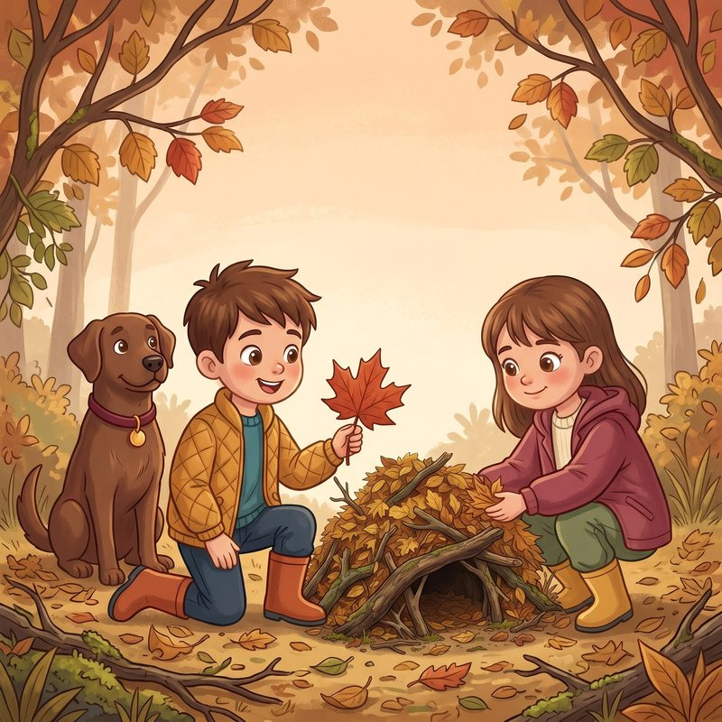

Igel im Winter
Ein Winterbett für den kleinen Igel
Eine herbstliche Geschichte über kleine Entdeckungen und einen Garten voller Leben
- 9 Seiten
- Hörgeschichte, 6 Min.
- Lesen üben: Klasse 1 bis 3
Worum es geht
Als Fiete und Lotte einen Igel im Garten entdecken, möchten sie mehr über ihren kleinen Besucher erfahren. Gemeinsam mit Mama und Papa bereiten sie einen geschützten Unterschlupf vor, stellen Wasser bereit und öffnen einen Durchgang zum Nachbargarten. Dabei lernen sie, was Igel für den Winter brauchen und wie viel Leben zwischen den Blättern steckt. Nun hoffen sie auf ein Wiedersehen – und darauf, dass der Igel ihr vorbereitetes Winterbett entdeckt.
Das entdeckt dein Kind
- Wie Igel leben: Sie suchen vor allem in der Dämmerung und nachts nach Nahrung. Für ihren Winterschlaf fressen sie sich Fettreserven an.
- Wie wir Igel unterstützen können: Geschützte Unterschlüpfe, freie Durchgänge zwischen Gärten und täglich frisches Wasser helfen ihnen.
- Warum wilde Gartenecken wertvoll sind: Laub bietet vielen kleinen Tieren Verstecke. Einige davon sind Nahrung für Igel. Deshalb lassen wir solche Lebensräume ungestört.
Hörprobe: So beginnt die Geschichte
Die ganze Geschichte gibt es in der Aha Kids App, zum Vorlesen, zum Anhören und zum Lesen üben.